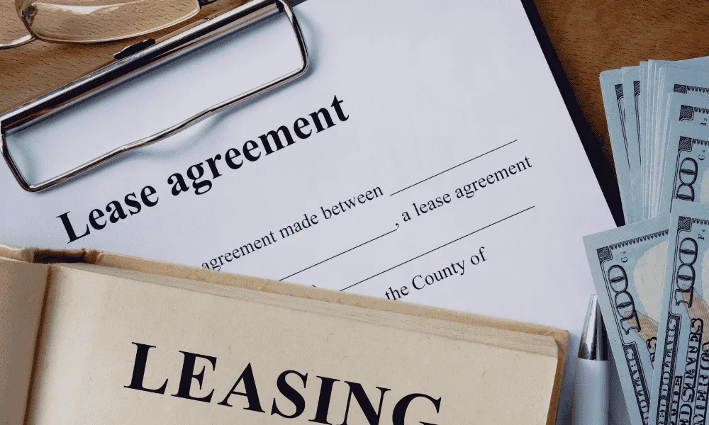

ICO Crecimiento o leasing para comprar maquinaria: cuál conviene

En resumen
ICO Crecimiento no ofrece leasing: es un préstamo que el ICO concede directamente a la empresa, que compra la máquina y es su propietaria desde el primer día.
- ICO Crecimiento: hasta el 80 % de la inversión, hasta 10 años con 2 de carencia y sin consumir tus líneas con el banco.
- Leasing: suele financiar el 100 %, a plazos más cortos y sin carencia, con ventajas fiscales en la amortización.
- En muchos casos lo mejor es combinarlos o decidir con los números de cada empresa.
Basado en el Documento de Condiciones Generales (DCG) de la línea ICO Crecimiento. Las condiciones pueden cambiar y, en caso de duda, prevalece el texto oficial: compruébalo siempre en www.ico.es.
Dos formas de financiar la misma máquina
Con un leasing, el banco o la financiera compra la máquina y te la alquila durante un plazo. Al final, puedes quedártela pagando el valor residual (la opción de compra). Con ICO Crecimiento, el ICO te presta el dinero, tú compras la máquina y es tuya desde el primer día; devuelves el préstamo en cuotas.
Las diferencias principales
| ICO Crecimiento | Leasing | |
|---|---|---|
| Propiedad | De la empresa desde el inicio | De la entidad hasta ejercer la opción de compra |
| Parte financiada | Hasta el 80 % de la inversión | Normalmente el 100 % del precio sin IVA |
| Plazo | Hasta 10 años | Normalmente de 3 a 7 años |
| Carencia | Hasta 2 años, solo intereses | Normalmente sin carencia |
| IVA | Se paga entero al comprar y se recupera en el siguiente IVA | Se paga repartido en cada cuota |
| Fiscalidad | Amortización normal de la máquina | Parte de la cuota puede deducirse de forma acelerada |
| Relación con el banco | No consume tus líneas bancarias | Consume riesgo con esa entidad |
Cuándo conviene ICO Crecimiento
- Cuando la máquina tarda en dar resultados: la carencia de hasta 2 años da margen para instalarla y ponerla a producir.
- Cuando quieres cuotas más bajas gracias a un plazo de hasta 10 años.
- Cuando tus bancos ya tienen mucho riesgo contigo y prefieres dejar libres tus líneas.
- Cuando la inversión incluye cosas que un leasing no cubre bien: instalación, software, formación o reforma de la nave.
- Cuando además necesitas circulante: se puede pedir en la misma solicitud.
Cuándo conviene el leasing
- Cuando no puedes aportar el 20 % que ICO Crecimiento no financia.
- Cuando el plazo de amortización acelerada te interesa fiscalmente. Consúltalo con tu asesor.
- Cuando la empresa tiene menos de 4 años o no cumple otros requisitos de ICO Crecimiento.
- Cuando se trata de camiones de transporte de mercancías por carretera, que ICO Crecimiento no financia.
Dos detalles prácticos
El IVA
ICO Crecimiento no financia el IVA que la empresa puede recuperar. Si compras una máquina de 200.000 €, tendrás que adelantar 42.000 € de IVA, que recuperarás en la siguiente declaración. Conviene tenerlo previsto en la tesorería.
Un leasing ya firmado
ICO Crecimiento no sirve para cancelar un leasing que ya tengas: en circulante solo permite cancelar deuda a corto plazo, y un leasing de maquinaria suele ser a largo. Sí puede financiar una máquina comprada en los 12 meses anteriores a la solicitud, si se pagó al contado.
Lo que no se puede financiar
ICO Crecimiento sí financia vehículos industriales y elementos de transporte de la actividad, pero no los camiones de transporte de mercancías por carretera. Tampoco puede pedirlo una empresa cuyo objeto social sea alquilar esos vehículos o equipos a terceros.
Preguntas frecuentes
¿ICO Crecimiento ofrece leasing?
No. ICO Crecimiento es un préstamo directo del ICO a la empresa, que compra la máquina y es su propietaria desde el primer día. Financia hasta el 80 % de la inversión, a hasta 10 años con 2 de carencia.
¿Qué es mejor para comprar maquinaria, ICO Crecimiento o leasing?
Depende de cada empresa. ICO Crecimiento ofrece más plazo, carencia y no consume las líneas del banco; el leasing suele financiar el 100 % y tiene ventajas fiscales en la amortización. Conviene comparar con los números reales.
¿Puedo cancelar un leasing con ICO Crecimiento?
Normalmente no. En circulante, la línea solo permite cancelar deuda a corto plazo, y un leasing de maquinaria suele ser a largo plazo.